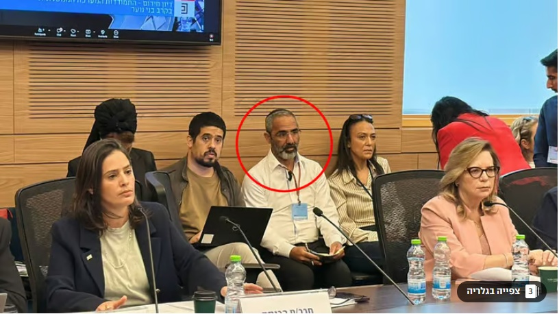

קריסת הנורמות: כשהציבור מואס בשלטון המכשיר עבריינות
השתיקה המהדהדת של תומכי הממשלה חושפת: גם הבסיס הפוליטי כבר אינו יכול להצדיק את טשטוש הגבולות בין החוק לפשע.
מאת: אמנון זוסמן
הדיון הסוער שנערך הבוקר בוועדה לזכויות הילד בכנסת לא נולד בחלל ריק. הוא כונס בעקבות אירועי רצח מזעזעים של צעירים בני העדה האתיופית – ימנו בנימין זלקה בפתח תקווה ודסטאו צ'קול בבאר שבע. בתוך האווירה הטעונה הזו, הזמנתו של רפי קדושים – פעיל ליכוד מרכזי וחבר מועצת עיריית הרצליה בעל עבר פלילי עשיר – הציתה אש בשיח הציבורי והפכה את הכתבה ב-ynet לזירת מאבק על עצם המוסר השלטוני.
דילמת המגיב: האם ניתן להאמין לשיקום בתוך מערכת מושחתת?
חלק מהמגיבים, גם אלו המביעים סלידה מהממשלה, מצאו עצמם מול דילמה מטרידה: האם עבריין שהשתקם אכן יכול לתרום לשיח על מניעת פשיעה? אולי אמירתו שהנערים "התכוונו רק לדקור" היא ניתוח ריאליסטי של אובדן הדרך בקרב הנוער? אולם, כפי שמשתקף במאות התגובות, הדילמה הזו הוכרעה במהירות. הציבור זיהה כי בסיטואציה הנוכחית, דבריו של קדושים אינם "עדות מומחה" אלא נרמול מסוכן של אלימות, המוגש בחסות שלטון שאיבד את הבושה.

רפי קדושים (מסומן בעיגול אדום) בלב הדיון בכנסת. חבר מועצה ופעיל ליכוד שהפך לסמל לטשטוש הגבולות הממסדי.
הממצאים המוחלטים: קריסה טוטאלית של הלגיטימציה
ניתוח כמותי של 324 תגובות וקרוב ל-14,000 קליקים תומכים מעלה תמונה של סלידה ציבורית גורפת:
| קבוצת נרטיב |
אחוז מהתגובות |
מעורבות תומכת (קליקים) |
אחוז כוח מצטבר |
| מתנגדי השלטון (זעקה מוסרית) |
92% |
13,038 |
96.3% |
| תומכי הממשלה (הגנה רפה) |
8% |
496 |
3.7% |
השתיקה המפלילה של תומכי הממשלה:
הנתון המדהים ביותר בניתוח הוא העובדה שגם תומכי הממשלה (3.7% בלבד מהמעורבות) לא הצליחו לייצר נרטיב שמגן על נוכחותו של קדושים. השתיקה הזו, או הניסיונות להסיט את האש לנושאים אחרים, חושפים שגם הבסיס הפוליטי של הליכוד מואס במצב הקיים. כשגם התומכים אינם מסוגלים לטעון בזכותו של "העבריין המשוקם" המקורב לשלטון, המסקנה היא שהמערכת הגיעה לנקודת רתיחה מוסרית.
מסקנות חותכות
הממצאים שניתחנו מובילים למסקנה בלתי נמנעת: הציבור הישראלי, על כל קצותיו, מזהה את חדירת הנורמות העברייניות ללב השלטון ומואס בה.
עצם הניסיון להציג עבריין מקורב כ"מומחה" בוועדה העוסקת ברצח בני נוער נתפס כירקה בפרצופן של המשפחות השכולות ושל הציבור שומר החוק. שתיקת תומכי הממשלה בכתבה זו היא ההוכחה החזקה ביותר לכך שהשלטון הנוכחי איבד את המצפן המוסרי שלו – וגם תומכיו כבר אינם מוצאים את המילים כדי להגן על הבושה.